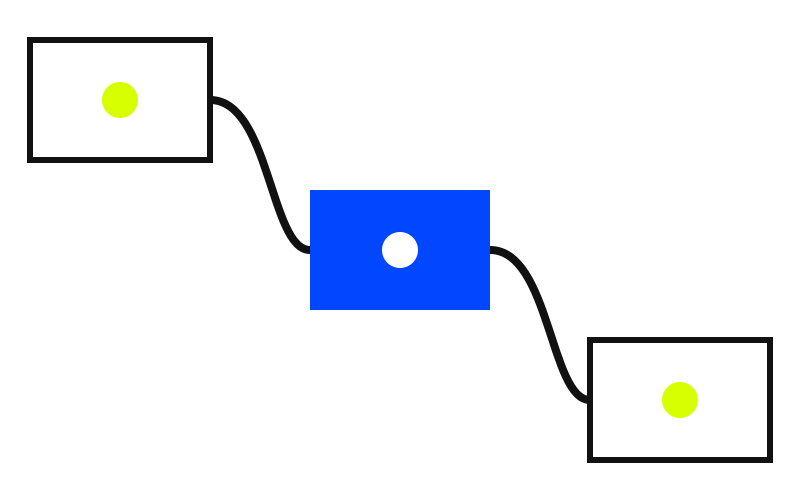

Fixture
Swiss deck needs registered layouts.
Open Design-style contracts and Guizang-style layout rhythm are checked before handoff.
System diagrams explain relationships, not decoration.
The graphic is a generated schematic with HTML labels, so text remains inspectable.

Close